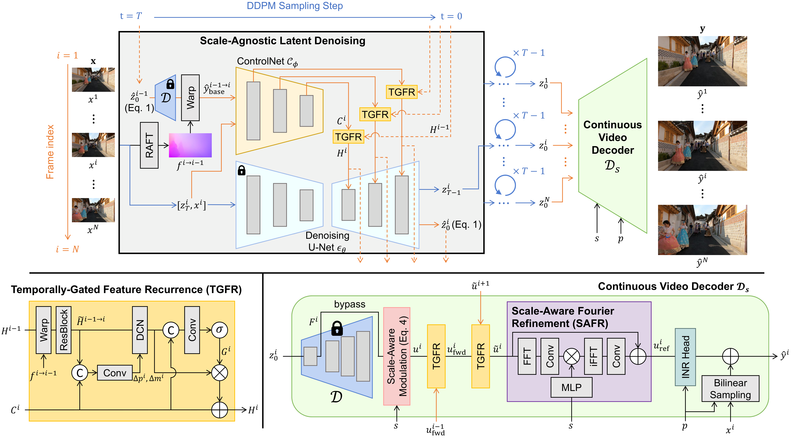
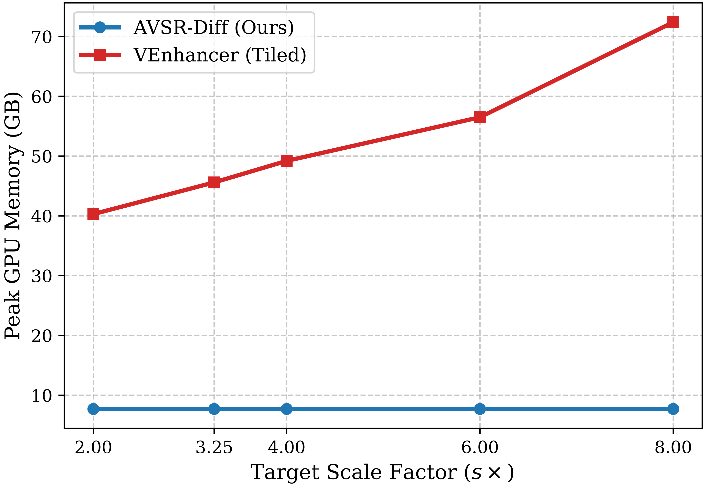

Qualitative Results

Figure 5. Visual comparisons across various upscaling factors on REDS4.
Compare AVSR-Diff (Ours) against baselines at arbitrary scales (2×–8×).
Drag the slider to compare • Scroll/Pinch to Zoom & super-resolve, Drag to Pan • Tap to Play/Pause
The render scale follows your zoom (2× → 4×) — zoom in and watch real detail appear. Switch scene below.
Drag the slider to compare AVSR-Diff (Ours) against a baseline — pick Bicubic LR, VEnhancer, or BF-STVSR and a scene below.
Diffusion models deliver striking perceptual quality for video super-resolution (VSR), yet they are locked to a single fixed upsampling factor. Coordinate-based arbitrary-scale methods are flexible but wash out fine detail at large scales, and naively combining the two lets the per-frame stochasticity of diffusion erupt into severe temporal flickering. We present AVSR-Diff, a decoupled framework that separates what to generate from the resolution at which it is rendered: all diffusion sampling runs once in a fixed low-resolution latent space (scale-agnostic), while a continuous video decoder renders the result at any target scale — keeping the generative cost and memory footprint essentially constant no matter how large the output.
Two designs make this possible. Our Temporally-Gated Feature Recurrence (TGFR) module aligns and adaptively gates recurrent features within a ControlNet, supplying the strictly aligned, flicker-free latent priors that sensitive continuous decoding demands. A Scale-Aware Fourier Refinement (SAFR) module then modulates frequency content inside the decoder to synthesize exactly the high-frequency detail each target scale calls for. Together they produce sharp, temporally stable video at any continuous scale — and AVSR-Diff not only sets a new state of the art among arbitrary-scale methods but even surpasses recent fixed-scale generative models on their own native 4× resolution.
AVSR-Diff is a decoupled framework built upon a pre-trained single-image super-resolution LDM. A trainable ControlNet guides the frozen denoising U-Net for scale-agnostic latent denoising, where the TGFR module aligns and gates recurrent features across adjacent frames to suppress flickering. The denoised latent sequence is then rendered by a Continuous Video Decoder that uses SAFR to modulate high-frequency details based on the target scale, followed by a coordinate-based INR for continuous querying.

Figure 1. Overview of the proposed AVSR-Diff: scale-agnostic latent denoising with the Temporally-Gated Feature Recurrence (TGFR) module, and a continuous video decoder with the Scale-Aware Fourier Refinement (SAFR) module.
Comparison with state-of-the-art methods on REDS4 and Vid4. AVSR-Diff achieves the best perceptual quality and temporal consistency among generative methods, and outperforms fixed-scale generative models even on their native 4× resolution. LPIPS, DISTS, and tOF are scaled by 102; tLPIPS by 103. The best and second-best results among all methods are highlighted in red and blue, respectively.
| Method | REDS4 | Vid4 | ||||||||||
|---|---|---|---|---|---|---|---|---|---|---|---|---|
| LPIPS↓ | DISTS↓ | PSNR↑ | SSIM↑ | tLPIPS↓ | tOF↓ | LPIPS↓ | DISTS↓ | PSNR↑ | SSIM↑ | tLPIPS↓ | tOF↓ | |
| Fixed-scale Regression-based VSR | ||||||||||||
| BasicVSR++ | 13.49 | 6.99 | 32.32 | 0.9057 | 9.19 | 18.16 | 19.09 | 12.26 | 27.72 | 0.8409 | 15.26 | 4.09 |
| RVRT | 13.32 | 6.91 | 32.70 | 0.9106 | 8.98 | 18.08 | 18.81 | 12.09 | 27.90 | 0.8456 | 15.15 | 4.06 |
| Arbitrary-scale Regression-based VSR | ||||||||||||
| ST-AVSR | 38.74 | 16.27 | 27.13 | 0.7711 | 24.61 | 23.65 | 41.40 | 18.79 | 24.51 | 0.6863 | 34.47 | 6.72 |
| SAVSR | 24.30 | 10.15 | 29.41 | 0.8417 | 8.54 | 19.76 | 24.73 | 12.98 | 27.12 | 0.8170 | 11.83 | 4.65 |
| Fixed-scale Generative VSR | ||||||||||||
| RealBasicVSR | 13.40 | 5.99 | 27.04 | 0.7777 | 6.42 | 34.40 | 21.31 | 12.29 | 24.45 | 0.6943 | 36.87 | 7.51 |
| Upscale-A-Video | 40.99 | 16.37 | 24.62 | 0.6495 | 23.68 | 106.60 | 40.90 | 21.38 | 21.88 | 0.5335 | 30.20 | 23.47 |
| MGLD-VSR | 14.53 | 6.23 | 26.25 | 0.7408 | 16.36 | 39.62 | 24.74 | 13.97 | 23.51 | 0.6391 | 32.69 | 30.26 |
| StableVSR | 9.74 | 4.51 | 27.97 | 0.7951 | 5.40 | 17.20 | 18.45 | 10.77 | 24.46 | 0.6989 | 25.26 | 6.09 |
| STAR | 29.48 | 12.17 | 23.08 | 0.6726 | 32.98 | 64.53 | 42.74 | 22.10 | 18.71 | 0.3977 | 46.11 | 22.84 |
| Arbitrary-scale Generative VSR | ||||||||||||
| VEnhancer | 34.69 | 14.91 | 22.90 | 0.6413 | 24.95 | 95.51 | 41.59 | 18.16 | 20.58 | 0.5430 | 29.66 | 14.35 |
| AVSR-Diff (Ours) | 9.54 | 4.42 | 28.75 | 0.8204 | 4.20 | 16.79 | 16.79 | 9.92 | 25.12 | 0.7241 | 9.19 | 5.78 |
Table 1. Quantitative comparison for 4× VSR on REDS4 and Vid4.
| Method | 2× | 3.25× | 8× | |||||||||
|---|---|---|---|---|---|---|---|---|---|---|---|---|
| LPIPS↓ | DISTS↓ | PSNR↑ | tOF↓ | LPIPS↓ | DISTS↓ | PSNR↑ | tOF↓ | LPIPS↓ | DISTS↓ | PSNR↑ | tOF↓ | |
| Arbitrary-scale Regression-based VSR | ||||||||||||
| VideoINR | 12.26 | 5.49 | 24.87 | 64.41 | 21.96 | 9.11 | 24.24 | 35.42 | 45.31 | 21.31 | 23.31 | 110.73 |
| MoTIF | 8.39 | 4.08 | 32.36 | 42.46 | 21.38 | 8.20 | 23.02 | 22.03 | 43.63 | 20.72 | 25.36 | 43.26 |
| ST-AVSR | 17.42 | 6.43 | 32.51 | 14.04 | 32.55 | 13.26 | 27.03 | 21.57 | 59.82 | 27.28 | 24.00 | 43.48 |
| SAVSR | 6.66 | 2.95 | 35.25 | 7.82 | 19.51 | 7.78 | 27.13 | 18.68 | 43.02 | 19.53 | 25.50 | 46.12 |
| BF-STVSR | 6.43 | 3.15 | 34.74 | 11.17 | 19.85 | 7.89 | 25.55 | 20.13 | 41.02 | 20.19 | 25.38 | 41.85 |
| V³VSR | 6.01 | 2.67 | 36.13 | 7.95 | 18.17 | 7.42 | 26.23 | 20.01 | 44.25 | 19.69 | 25.89 | 44.51 |
| Fixed-scale Generative VSR + Bicubic | ||||||||||||
| RealBasicVSR | 8.26 | 4.88 | 31.16 | 22.98 | 13.03 | 5.78 | 24.47 | 30.34 | 36.00 | 16.18 | 24.14 | 71.04 |
| Upscale-A-Video | 31.27 | 15.03 | 26.32 | 57.35 | 40.78 | 19.94 | 23.47 | 89.66 | 45.46 | 20.11 | 21.70 | 187.20 |
| MGLD-VSR | 8.70 | 4.90 | 30.86 | 22.96 | 13.94 | 6.15 | 24.30 | 32.49 | 37.61 | 15.86 | 23.49 | 210.24 |
| StableVSR | 5.51 | 1.99 | 33.49 | 8.01 | 14.38 | 6.00 | 24.91 | 20.85 | 34.96 | 15.59 | 23.72 | 44.09 |
| STAR | 26.37 | 12.21 | 25.08 | 45.52 | 25.44 | 10.87 | 21.18 | 67.16 | 52.26 | 19.16 | 18.42 | 153.58 |
| Arbitrary-scale Generative VSR | ||||||||||||
| VEnhancer | 23.39 | 10.00 | 23.27 | 77.78 | 30.71 | 12.95 | 22.53 | 83.04 | 43.87 | 19.67 | 21.73 | 129.42 |
| AVSR-Diff (Ours) | 3.84 | 1.72 | 35.47 | 7.37 | 8.17 | 3.21 | 26.50 | 15.23 | 29.43 | 14.09 | 24.95 | 39.13 |
Table 2. Quantitative comparison for arbitrary-scale VSR (2×, 3.25×, 8×) on REDS4.

Figure 4. Peak GPU memory vs. target scale. AVSR-Diff maintains a constant footprint while tiled video diffusion grows rapidly.
Figure 5. Visual comparisons across various upscaling factors on REDS4.
@inproceedings{youk2026avsr,
author = {Youk, Geunhyuk and Do, Jeonghyeok and Kim, Dayeon and Oh, Jihyong and Kim, Munchurl},
title = {AVSR-Diff: Scale-Agnostic Diffusion Priors for Temporally Consistent Arbitrary-Scale Video Super-Resolution},
booktitle = {European Conference on Computer Vision (ECCV)},
year = {2026},
}